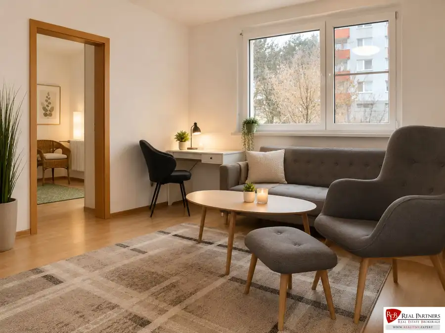
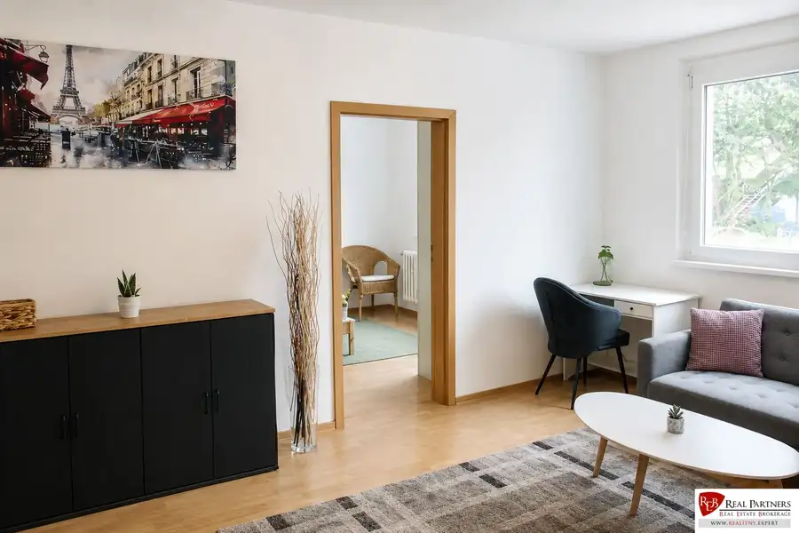
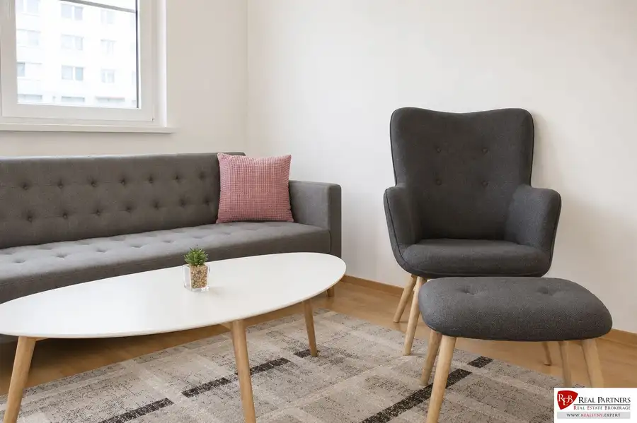
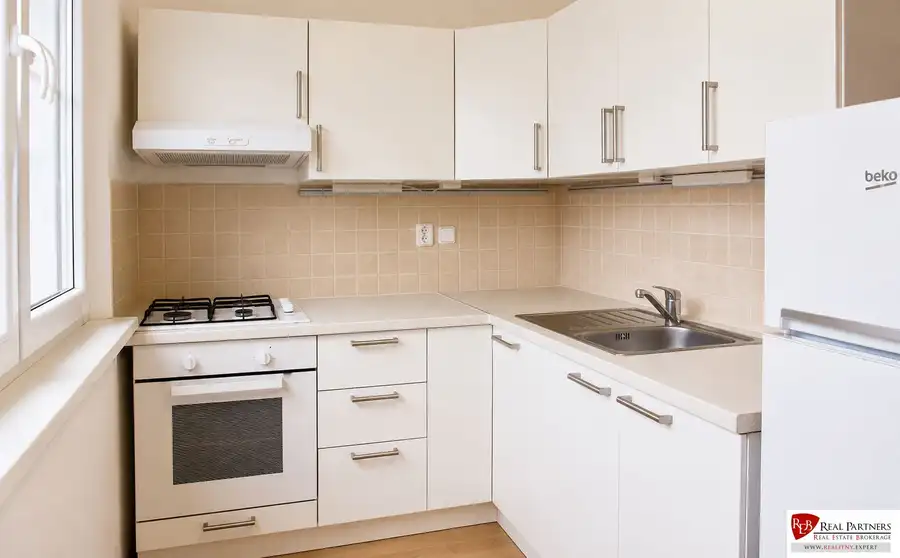
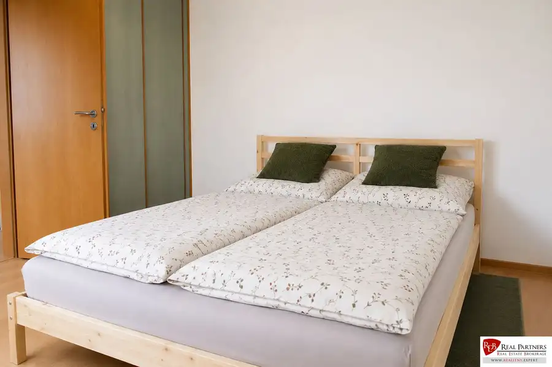
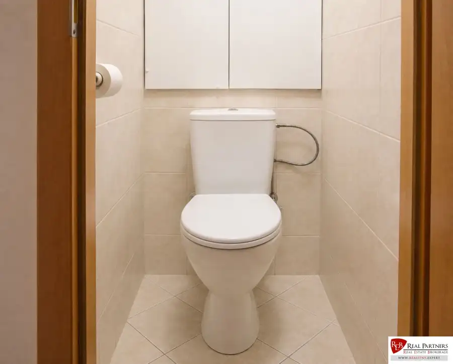
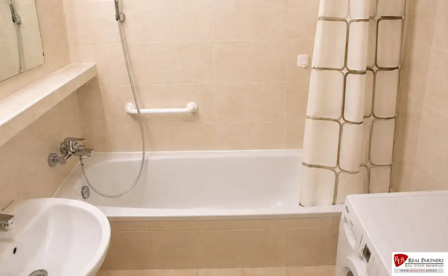
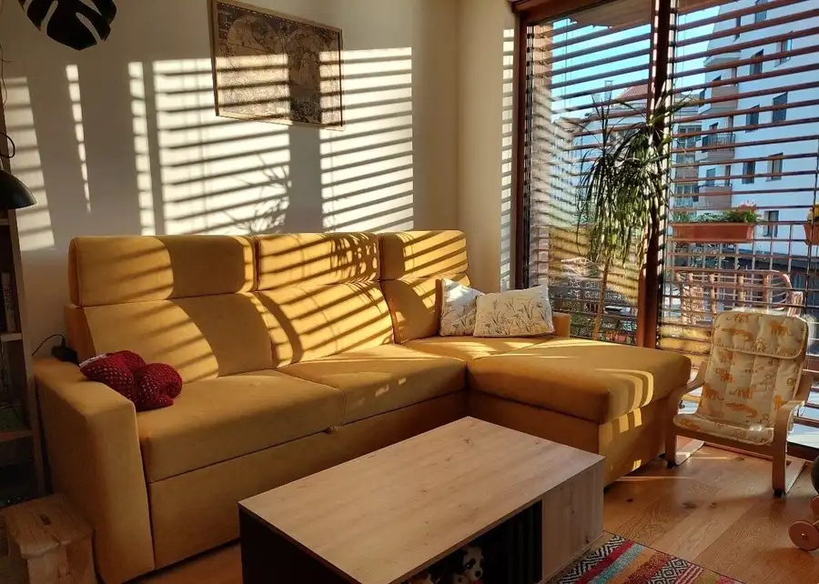
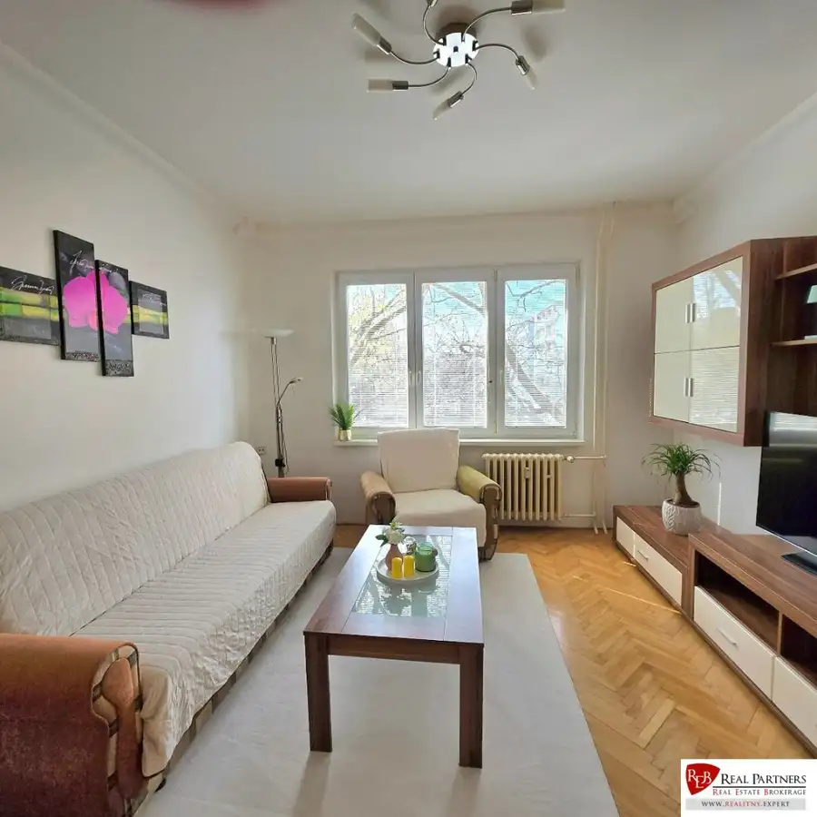
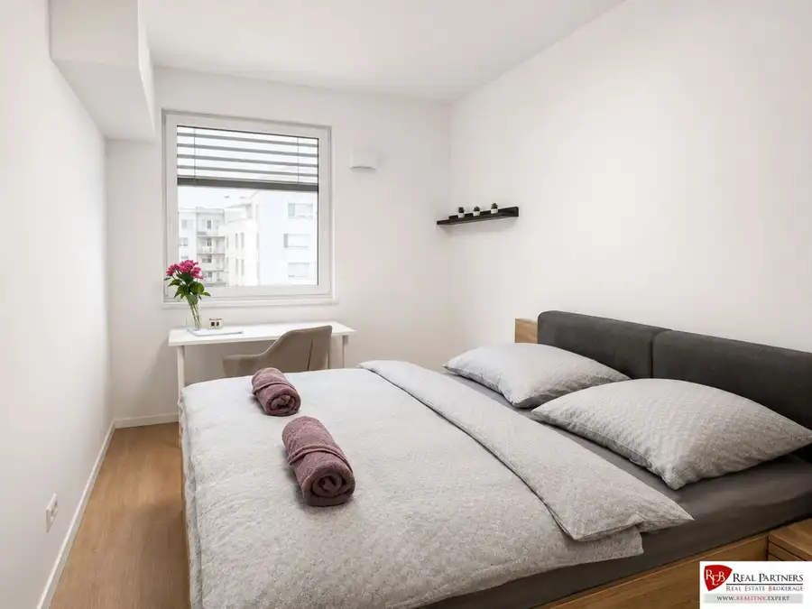

REB.SK 2-izbový byt v pokojnej časti Dúbravky
Dúbravka, Bratislava







- Dispozícia2-izbový
- Plocha55 m²
- StavČiastočná rekonštrukcia
- VlastníctvoOsobné
- Energetická triedaA
O nehnuteľnosti
Ponúkame na prenájom tento príjemný 2-izbový byt v pokojnej časti Dúbravky.Byt je kompletne zariadený.Výborná poloha v blízkosti prírody a zároveň dobré napojenie do centra mesta, čo z neho robí ideálnu voľbu pre jednotlivcov alebo pár hľadajúcich komfortné mestské bývanie v pokojnom prostredí.BENEFITY- byt je zariadený úplne novým nábytkom- svetlý byt nachádzajúci sa na prvom poschodí- vonkajšie žalúzie na oknách- internetové pripojenie- pokojná lokalita s množstvom zelene, blízkosť lesov Malých Karpát a turistických trás- kompletná občianska vybavenosť v okolí, obchody, služby, školy- zastávka MHD 150 m od bytu- parkovisko pred bytom DISPOZÍCIA Vstupná chodba so vstavanou skriňou, kuchyňa so všetkými spotrebičmi , spálňa so zabudovanými skriňami. Kúpeľňa je vybavená vaňou a práčkou, samostatné wcCENA 750 eur nájom + 100 € energiePri podpise zmluvy sa hradí: - 1mesačný depozit - 1 mesačné nájomné- provízia pre RKPre bližšie informácie a obhliadky nás môžete kontaktovať na 0918602135 alebo mailom klepacova@reb.sk© Všetky informácie uvedené v tomto inzeráte sú orientačné a môžu podliehať zmene.© Text a fotografie sú autorským dielom a majetkom realitnej kancelárie REB - REAL PARTNERS.
Parametre
- Cena vrátane energií
- Nie
- Druh
- 2 izbový byt
- Dátum zverejnenia
- 04. 08. 2026
- Energetický certifikát budovy
- A
- Energie
- 100
- Počet izieb / miestností
- 2
- Počet nadzemných podlaží
- 4
- Rok výstavby
- 1979
- Stav nehnuteľnosti
- Čiastočná rekonštrukcia
- Typ
- Prenájom
- Typ konštrukcie
- Tehlová
- Umiestnenie
- Ďalšie nadzemné podlažie
- Vlastníctvo
- Osobné
- Úžitková plocha
- 55 m²
Kde to je


Mohlo by Vás zaujímať

BytNové 1 100 €Prenájom 2-izbového bytu, Ružinov Ružinov, Bratislava 2-izbový42 m²
BytNové Cena na vyžádáníREB.SK 43 m² | Kompletná rekonštrukcia | Ružinov | Ihneď voľný“ Ružinov, Bratislava 1-izbový43 m²3. podlažie
BytNové 460 000 €Štýlový 4-izbový byt Mlynské nivy Nuppu Ružinov, Bratislava 4-izbový85.7 m²